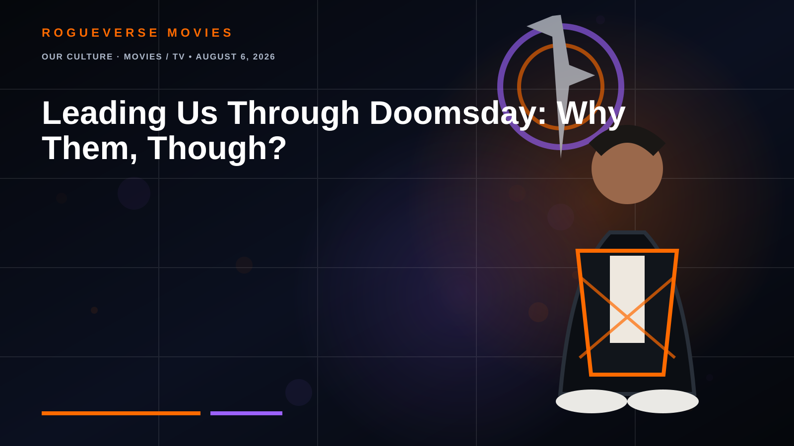
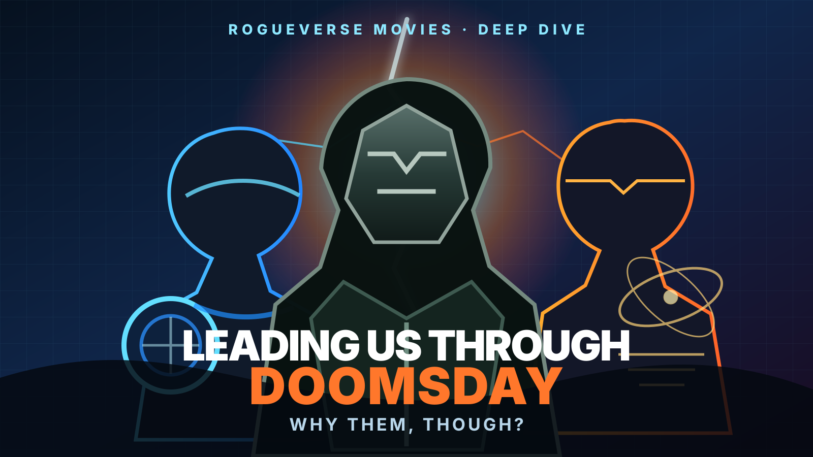

OUR CULTURE · MOVIES / TV • AUGUST 6, 2026
Leading Us Through Doomsday: Why Them, Though?
With Avengers, Fantastic Four, X-Men, Wakandans and more converging in Avengers: Doomsday, why do Steve Rogers and Reed Richards make so much sense as the men who could guide us through it? One is the compass. One is the map. Doctor Doom wants to be both.


There are enough heroes in Avengers: Doomsday to make the phrase “ensemble movie” feel inadequate.
The Avengers are involved. The Fantastic Four are involved. The X-Men are involved. Wakanda is involved. The New Avengers are involved. Thor is back. Sam Wilson is Captain America. Loki is somewhere in the larger multiversal equation. And Robert Downey Jr. is returning to Marvel not as Tony Stark, but as Victor von Doom.
So when recent coverage began treating Steve Rogers and Reed Richards as two of the characters likely to carry a major share of the film’s narrative weight, the natural reaction was not simply excitement.
It was a question.
Why them, though?
Why center a story this enormous around a soldier whose MCU arc appeared to receive a complete ending in Avengers: Endgame and a scientist whose MCU career only began in The Fantastic Four: First Steps?
The deeper you go into Marvel’s comic history, the structure of the Multiverse Saga and the specific kind of enemy Doctor Doom represents, the less strange the pairing becomes.
Steve Rogers and Reed Richards embody two things Doom is uniquely designed to challenge.
STEVE ROGERS
The Compass. Trust, battlefield leadership, moral clarity and the ability to turn strangers into a team.
REED RICHARDS
The Map. Incursions, impossible science, multiversal logic and the one rivalry that defines Victor von Doom.
DOCTOR DOOM
The Third Answer. If knowledge and cooperation fail, Doom’s solution is control.
First: Marvel has not officially declared two co-leads
That distinction matters. Marvel Studios has not issued a statement saying, “Steve Rogers and Reed Richards are the two protagonists of Doomsday.” Promotional art, trailer emphasis and entertainment coverage can suggest hierarchy, but they are not screenplay page counts.
The useful question is therefore not whether Marvel has stamped “MAIN CHARACTER” above either hero. The useful question is why these two characters are especially well suited to become the audience’s anchors inside a movie full of competing teams, universes and histories.
The answer starts with Reed.
Reed Richards is built for the end of the multiverse
If Doomsday is borrowing heavily from Jonathan Hickman’s Avengers, New Avengers, Time Runs Out and 2015’s Secret Wars, Reed Richards is not simply a convenient genius to have nearby.
He is embedded in the architecture of that story.
In Marvel Comics, Reed becomes a member of the Illuminati, the secret group attempting to solve the incursion crisis. Incursions force two universes into collision, creating a horrifying survival problem: if the collision completes, both realities can die. Marvel’s own Secret Wars guides describe the Illuminati confronting those incursions before reality finally collapses into the patchwork world ruled by Doctor Doom.
That is exactly the kind of problem Reed exists to understand.
Tony Stark used to fill part of this role in the MCU. Bruce Banner could share it. Doctor Strange translated mystical crises. But Reed Richards is Marvel’s natural choice when the problem stops being “how do we defeat the villain?” and becomes “how do we keep existence from mathematically ending?”
He can plausibly stand in front of heroes from different universes and explain what an incursion is, why their worlds cannot simply coexist indefinitely and what options remain.
That makes him the audience’s scientific translator.
More importantly, Reed is Doom’s opposite number
Doctor Doom has fought nearly everyone worth fighting in Marvel Comics, but Reed Richards is different.
Their rivalry is personal, intellectual and philosophical. Both men are geniuses. Both believe impossible problems can be solved. Both can become dangerously convinced that they are the smartest person in the room.
The difference is what happens after that confidence is tested.
Reed’s best stories force him to remember that brilliance does not make him infallible. His family repeatedly pulls him back toward humility, collaboration and responsibility.
Doom tends to reach the opposite conclusion.
If everyone else fails to understand Victor’s greatness, then Victor concludes that everyone else is the problem.
That difference becomes the engine of 2015’s Secret Wars. Doom does something genuinely extraordinary: he salvages pieces of a dying multiverse and creates Battleworld. He saves what he can.
Then he rules it as a god.
That is why Doom becomes much more frightening when Reed is present. Their conflict is not merely scientist versus armored dictator. It is an argument over what intelligence is for.
Reed can tell everyone what is happening. Steve can make them listen.
This is where Steve Rogers enters the equation.
Steve does not understand the multiverse better than Reed. He cannot out-invent Doom. He is not the strongest person in the cast. He is not even the only Captain America.
What Steve does better than almost anyone in Marvel history is turn chaos into coordinated action.
Look back at the Battle of New York. Tony has the technology. Thor has the raw power. Hulk is a green natural disaster. Black Widow and Hawkeye have field experience.
But when the Avengers finally stop behaving like six separate problems and become a team, Steve begins assigning roles.
That is not accidental characterization. Leadership is Steve Rogers’ real superpower.
Now enlarge New York into a multiversal war.
Imagine Avengers, Fantastic Four members, X-Men, Wakandans, enhanced soldiers, gods, scientists and heroes from different realities arriving with different histories and potentially incompatible goals. Some may not trust one another. Some may blame another universe for the incursion. Some may have already lost their own world.
Reed can explain why cooperation is necessary.
Steve can convince people to cooperate anyway.
The comics already put Steve and Reed on opposite sides of survival
Hickman’s incursion saga is especially useful here because it tested precisely the moral difference between these characters.
The Illuminati confront an impossible question: if saving your Earth requires destroying another Earth before two universes collide, what are heroes allowed to do?
Steve rejects the logic that mass murder becomes acceptable simply because the math is terrifying. Other members of the Illuminati, including Reed, continue searching for increasingly desperate solutions.
Neither position is treated as painless.
That is what makes this material richer than a normal superhero puzzle. Reed can be correct about the physics while Steve remains correct about what a hero must refuse to become.
Put Doctor Doom between them and the philosophical triangle becomes even sharper.
REED: We can solve this.
STEVE: We can survive without abandoning who we are.
DOOM: You already failed. Give me control.
That is a movie-sized argument.
Doom works best when his answer almost sounds reasonable
The most compelling version of Victor von Doom is not a man who destroys reality because he enjoys destruction.
It is a man who looks at everyone else’s failures and says, “I told you so.”
If the multiverse is genuinely collapsing, Doom may have information Reed needs. He may possess technology other heroes cannot reproduce. He may even present the only plan that appears capable of saving anything.
The price is the important part.
Doom’s solution almost always contains Doom.
His peace requires obedience. His safety requires submission. His perfect world requires everyone to accept that Victor should decide what perfection means.
That gives Steve a role no equation can replace. He is the character most naturally equipped to ask whether survival without freedom still counts as victory.
Why not Thor?
Thor is an original Avenger, one of Marvel’s most powerful heroes and one of the longest-running characters in the MCU. He absolutely belongs near the center of an event this large.
But Thor performs a different dramatic function.
Thor is the weapon. Reed is the map. Steve is the compass.
That trio is more useful than three characters all competing to be “the leader.”
A sprawling Russo brothers event film can distribute importance across multiple groups, just as Infinity War did. Steve and Reed can be structural anchors without reducing Thor, Sam Wilson, the Fantastic Four or the X-Men to background scenery.
And what about Sam Wilson?
This is the part Marvel has to handle carefully.
Sam Wilson is Captain America.
The MCU spent years making that transition matter. Bringing Steve Rogers back should not turn Sam into the guy who kept the shield warm until the original owner returned.
Fortunately, Steve does not need the title to matter.
His value in Doomsday can come from experience rather than ownership. He can be a veteran strategist, a symbol from the first Avengers era and a man who knows what it means to lead people through an apparently unwinnable war.
That can actually strengthen Sam’s position.
Steve represents where the Avengers came from. Sam represents what Captain America means now. A smart script can let Steve advise, challenge and ultimately validate Sam without reclaiming the mantle.
Reed has the opposite problem: he is new to us
Steve has history. Reed has importance.
That creates a storytelling challenge because MCU audiences have spent far less time with Reed Richards than with Steve, Thor or many of the returning X-Men.
His relationship with Doom is the shortcut.
If Reed knows Victor better than anyone else, he instantly becomes essential. He is no longer merely “the stretchy scientist from the newest team.” He is the man who understands the enemy’s mind, the science of the crisis and perhaps the emotional wound beneath Doom’s obsession.
Reports from Marvel’s 2026 convention presentation have further emphasized conflict between Reed and Doom, which is exactly where decades of Fantastic Four comics point.
There may be a third field commander: Cyclops
If Marvel wants each major heroic faction to have its own tactical voice, Scott Summers is worth watching.
Cyclops is one of Marvel Comics’ strongest field commanders. With veteran X-Men returning for Doomsday, a structure built around Steve Rogers, Reed Richards and Scott Summers would give the Avengers, Fantastic Four and X-Men distinct leadership centers without forcing all of Marvel history under a single banner.
That possibility also helps explain why Steve’s role could be larger than simply “former Captain America returns.” He can represent the original MCU generation itself.
Steve is history. Reed is the future.
This may be the cleanest reason to put them together.
Steve Rogers carries the emotional weight of the Infinity Saga. Reed Richards carries enormous narrative weight for the next stage of Marvel’s cosmic and multiversal mythology.
One character connects Doomsday backward.
The other connects it forward.
And standing between them is Doctor Doom.
That gets even stranger because Doom is played by Robert Downey Jr.
Reed can look at that man and see Victor.
Steve can look at that face and, depending on how Marvel chooses to play the resemblance, potentially confront the emotional shadow of Tony Stark.
The audience will be doing that automatically.
Downey spent more than a decade teaching moviegoers to associate his face and voice with the MCU’s defining hero. Doomsday has to teach us to read that same performer as one of Marvel’s defining villains.
Putting Steve Rogers anywhere near that transformation gives Marvel an emotional weapon that has nothing to do with superpowers.
So, why them?
Because Avengers: Doomsday probably cannot be solved by finding the two people who punch hardest.
This is a story about realities colliding. Teams colliding. Histories colliding. Moral philosophies colliding.
Reed Richards is the character Marvel turns toward when reality itself becomes a problem that needs solving.
Steve Rogers is the character Marvel turns toward when heroes become a problem that needs uniting.
Doctor Doom is terrifying because he believes he can do both jobs better.
Reed understands the apocalypse.
Steve understands the people trapped inside it.
Doom believes only he deserves to decide what comes after.
If that is the foundation Marvel and the Russo brothers are building, then Steve and Reed do not feel like arbitrary choices at all.
They feel almost inevitable.
The RogueVerse take
We should still resist treating marketing composition as a leaked screenplay. Marvel has not confirmed that Steve Rogers and Reed Richards are literal co-leads.
But the comics give the pairing unusually strong logic.
Reed is inseparable from Doom, incursions and the philosophical machinery of Secret Wars. Steve is one of Marvel’s most effective symbols of collective action and moral restraint. Put them together and Doom no longer has to be merely the final boss.
He becomes a third ideology.
Knowledge. Conviction. Control.
That is a far stronger dramatic spine than “every Marvel character arrives and punches the same metal guy.”
And if Doomsday really is preparing the road to Secret Wars, the final battle may not simply be about who is powerful enough to save reality.
It may be about who deserves to decide what the saved reality becomes.
Sources & further reading
- CBR: Avengers: Doomsday main-character discussion that prompted this RogueVerse deep dive
- Marvel: Mister Fantastic in comics
- Marvel: Who Are the Illuminati?
- Marvel: Secret Wars, incursions and Battleworld
- Marvel: Steve Rogers on screen
- Marvel: Captain America in comics
- GamesRadar: Avengers: Doomsday release, cast and reported footage overview
Editorial note: Plot interpretation and character-role predictions are RogueVerse analysis. Unconfirmed story details are not presented as fact. Marvel-related trademarks and IP remain the property of their respective rights holders.